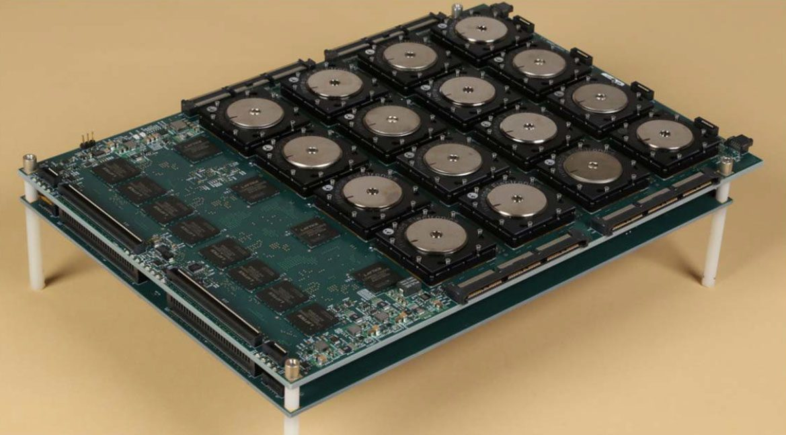

Research
Grounding edge neuromorphic systems in public science, transparent methodology, and honest benchmarking.
Neuromorphic hardware is an established research field. Our work builds on public research and focuses on making it practical for edge products, with verification and honest benchmarking at the centre.

A 16-chip brain-inspired computing board from DARPA's SyNAPSE programme (2014). Not MorphoNerva hardware. Public domain.
Questions we care about
- How much activity sparsity survives on real sensor data, not just benchmarks, and what does it cost in accuracy?
- Which ways of turning continuous signals into events (encodings) work best for which signals?
- How should training account for the exact arithmetic of low-precision digital hardware?
- How do you verify a neural processor so that simulation and silicon agree on every step?
- When does event-driven hardware beat a well-optimized conventional baseline, and when does it not?
How we work
Our engineering and scientific standards are designed to keep research rigorous, reproducible, and verifiable.
| Standard | What it means |
|---|---|
| Pre-registered experiments | Hypothesis, comparison arms, ≥ 3 random seeds and a kill criterion are written down before a run. |
| Strong baselines | Every result is compared with a well-tuned conventional model at matched size, not a weak straw man. |
| Model = hardware | Hardware is verified step by step against a reference model before it counts. |
| Negative results kept | An experiment that fails is recorded with its reason, and revisited when conditions change. |
| Clean provenance | Every dataset, dependency and design decision has a recorded source and licence. |
Publications and open tools
None yet. Papers, tools and benchmarks will be listed here as they pass validation and IP review.
Good public starting points
Recommended literature and resources for those exploring neuromorphic computing:
- Neuronal Dynamics, Gerstner, Kistler, Naud and Paninski: a free online textbook on spiking neuron models.
- Roy, Jaiswal and Panda, Towards spike-based machine intelligence with neuromorphic computing, Nature (2019): an overview of the field.
- Eshraghian et al., Training Spiking Neural Networks Using Lessons From Deep Learning: a practical tutorial on training SNNs.
- NIR, the Neuromorphic Intermediate Representation: an open format for exchanging spiking models between frameworks and hardware.
- Open Neuromorphic: a community hub for open neuromorphic research and tools.